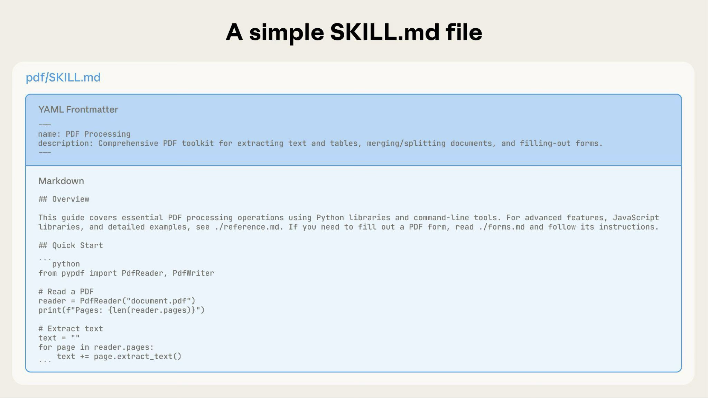
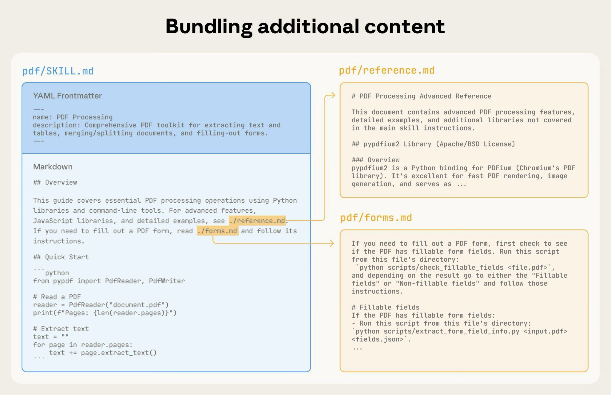
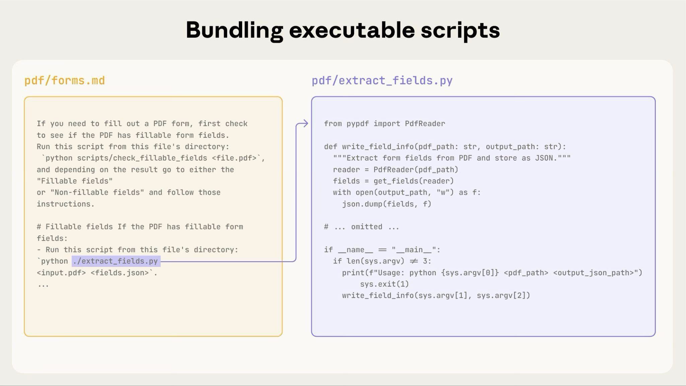

Loading...
Loading...
Loading...
Loading...
Loading...
Loading...
Loading...
Loading...
Loading...
Loading...
Loading...
Loading...
Loading...
Loading...
Loading...
Loading...
好的技能应该简洁、结构良好且经过真实使用测试。本指南提供实用的创作决策，帮助您编写 Claude 能够有效发现和使用的技能。
有关技能工作原理的概念背景，请参阅技能概述。
上下文窗口是一种公共资源。您的技能与 Claude 需要了解的所有其他内容共享上下文窗口，包括：
技能中的每个令牌都没有直接成本。启动时，只有所有技能的元数据（名称和描述）被预加载。Claude 仅在技能变得相关时才读取 SKILL.md，并根据需要读取其他文件。但是，在 SKILL.md 中保持简洁仍然很重要：一旦 Claude 加载它，每个令牌都会与对话历史和其他上下文竞争。
默认假设：Claude 已经非常聪明
只添加 Claude 没有的上下文。质疑每一条信息：
好的例子：简洁（大约 50 个令牌）：
## 提取 PDF 文本
使用 pdfplumber 进行文本提取：
```python
import pdfplumber
with pdfplumber.open("file.pdf") as pdf:
text = pdf.pages[0].extract_text()
```不好的例子：过于冗长（大约 150 个令牌）：
## 提取 PDF 文本
PDF（便携式文档格式）文件是一种常见的文件格式，包含
文本、图像和其他内容。要从 PDF 中提取文本，您需要
使用一个库。有许多库可用于 PDF 处理，但我们
建议使用 pdfplumber，因为它易于使用且能处理大多数情况。
首先，您需要使用 pip 安装它。然后您可以使用下面的代码...简洁版本假设 Claude 知道什么是 PDF 以及库如何工作。
将具体程度与任务的脆弱性和可变性相匹配。
高自由度（基于文本的说明）：
使用场景：
示例：
## 代码审查流程
1. 分析代码结构和组织
2. 检查潜在的错误或边界情况
3. 建议改进可读性和可维护性
4. 验证是否遵守项目约定中等自由度（伪代码或带参数的脚本）：
使用场景：
示例：
## 生成报告
使用此模板并根据需要自定义：
```python
def generate_report(data, format="markdown", include_charts=True):
# 处理数据
# 以指定格式生成输出
# 可选地包含可视化
```低自由度（特定脚本，很少或没有参数）：
使用场景：
示例：
## 数据库迁移
运行完全相同的脚本：
```bash
python scripts/migrate.py --verify --backup
```
不要修改命令或添加其他标志。类比：将 Claude 视为探索路径的机器人：
技能作为模型的附加功能，因此有效性取决于底层模型。使用您计划使用的所有模型测试您的技能。
按模型的测试考虑：
对 Opus 完美有效的东西可能需要为 Haiku 提供更多细节。如果您计划在多个模型中使用您的技能，请针对所有模型都能很好地工作的说明。
YAML 前置事项：SKILL.md 前置事项需要两个字段：
name：
description：
有关完整的技能结构详情，请参阅技能概述。
使用一致的命名模式使技能更容易引用和讨论。我们建议对技能名称使用动名词形式（动词 + -ing），因为这清楚地描述了技能提供的活动或能力。
请记住，name 字段必须仅使用小写字母、数字和连字符。
好的命名示例（动名词形式）：
processing-pdfsanalyzing-spreadsheetsmanaging-databasestesting-codewriting-documentation可接受的替代方案：
pdf-processing、spreadsheet-analysisprocess-pdfs、analyze-spreadsheets避免：
helper、utils、toolsdocuments、data、filesanthropic-helper、claude-tools一致的命名使以下操作更容易：
description 字段启用技能发现，应包括技能的功能和使用时机。
始终用第三人称编写。描述被注入到系统提示中，不一致的视角可能会导致发现问题。
具体并包含关键术语。包括技能的功能和使用它的具体触发器/上下文。
每个技能恰好有一个描述字段。描述对于技能选择至关重要：Claude 使用它从可能的 100+ 个可用技能中选择正确的技能。您的描述必须提供足够的细节，以便 Claude 知道何时选择此技能，而 SKILL.md 的其余部分提供实现细节。
有效的示例：
PDF 处理技能：
description: 从 PDF 文件中提取文本和表格、填充表单、合并文档。在处理 PDF 文件或用户提及 PDF、表单或文档提取时使用。Excel 分析技能：
description: 分析 Excel 电子表格、创建数据透视表、生成图表。在分析 Excel 文件、电子表格、表格数据或 .xlsx 文件时使用。Git 提交助手技能：
description: 通过分析 git 差异生成描述性提交消息。当用户要求帮助编写提交消息或审查暂存更改时使用。避免模糊的描述，如：
description: 帮助处理文档description: 处理数据description: 对文件进行各种操作SKILL.md 作为概述，指向 Claude 根据需要查看的详细材料，就像入职指南中的目录一样。有关渐进式披露如何工作的解释，请参阅概述中的技能如何工作。
实用指导：
基本技能仅包含一个 SKILL.md 文件，其中包含元数据和说明：

随着您的技能增长，您可以捆绑 Claude 仅在需要时加载的其他内容：

完整的技能目录结构可能如下所示：
pdf/
├── SKILL.md # 主要说明（触发时加载）
├── FORMS.md # 表单填充指南（根据需要加载）
├── reference.md # API 参考（根据需要加载）
├── examples.md # 使用示例（根据需要加载）
└── scripts/
├── analyze_form.py # 实用脚本（执行，不加载）
├── fill_form.py # 表单填充脚本
└── validate.py # 验证脚本---
name: pdf-processing
description: 从 PDF 文件中提取文本和表格、填充表单、合并文档。在处理 PDF 文件或用户提及 PDF、表单或文档提取时使用。
---
# PDF 处理
## 快速开始
使用 pdfplumber 提取文本：
```python
import pdfplumber
with pdfplumber.open("file.pdf") as pdf:
text = pdf.pages[0].extract_text()
```
## 高级功能
**表单填充**：参阅 [FORMS.md](FORMS.md) 获取完整指南
**API 参考**：参阅 [REFERENCE.md](REFERENCE.md) 获取所有方法
**示例**：参阅 [EXAMPLES.md](EXAMPLES.md) 获取常见模式Claude 仅在需要时加载 FORMS.md、REFERENCE.md 或 EXAMPLES.md。
对于具有多个领域的技能，按领域组织内容以避免加载无关的上下文。当用户询问销售指标时，Claude 只需要读取与销售相关的架构，而不是财务或营销数据。这保持令牌使用低且上下文集中。
bigquery-skill/
├── SKILL.md (概述和导航)
└── reference/
├── finance.md (收入、计费指标)
├── sales.md (机会、管道)
├── product.md (API 使用、功能)
└── marketing.md (活动、归因)# BigQuery 数据分析
## 可用数据集
**财务**：收入、ARR、计费 → 参阅 [reference/finance.md](reference/finance.md)
**销售**：机会、管道、账户 → 参阅 [reference/sales.md](reference/sales.md)
**产品**：API 使用、功能、采用 → 参阅 [reference/product.md](reference/product.md)
**营销**：活动、归因、电子邮件 → 参阅 [reference/marketing.md](reference/marketing.md)
## 快速搜索
使用 grep 查找特定指标：
```bash
grep -i "revenue" reference/finance.md
grep -i "pipeline" reference/sales.md
grep -i "api usage" reference/product.md
```显示基本内容，链接到高级内容：
# DOCX 处理
## 创建文档
使用 docx-js 创建新文档。参阅 [DOCX-JS.md](DOCX-JS.md)。
## 编辑文档
对于简单编辑，直接修改 XML。
**对于跟踪更改**：参阅 [REDLINING.md](REDLINING.md)
**对于 OOXML 详情**：参阅 [OOXML.md](OOXML.md)Claude 仅在用户需要这些功能时读取 REDLINING.md 或 OOXML.md。
当从其他引用文件引用文件时，Claude 可能会部分读取文件。遇到嵌套引用时，Claude 可能会使用 head -100 等命令预览内容，而不是读取整个文件，导致信息不完整。
保持引用距离 SKILL.md 一级。所有参考文件应直接从 SKILL.md 链接，以确保 Claude 在需要时读取完整文件。
不好的例子：太深：
# SKILL.md
参阅 [advanced.md](advanced.md)...
# advanced.md
参阅 [details.md](details.md)...
# details.md
这是实际信息...好的例子：一级深：
# SKILL.md
**基本使用**：[SKILL.md 中的说明]
**高级功能**：参阅 [advanced.md](advanced.md)
**API 参考**：参阅 [reference.md](reference.md)
**示例**：参阅 [examples.md](examples.md)对于超过 100 行的参考文件，在顶部包含目录。这确保 Claude 即使在部分读取时也能看到可用信息的完整范围。
示例：
# API 参考
## 内容
- 身份验证和设置
- 核心方法（创建、读取、更新、删除）
- 高级功能（批量操作、webhooks）
- 错误处理模式
- 代码示例
## 身份验证和设置
...
## 核心方法
...Claude 可以根据需要读取完整文件或跳转到特定部分。
有关此基于文件系统的架构如何启用渐进式披露的详情，请参阅下面"高级"部分中的运行时环境部分。
将复杂操作分解为清晰的顺序步骤。对于特别复杂的工作流，提供一个清单，Claude 可以将其复制到其响应中并在进行时检查。
示例 1：研究综合工作流（适用于没有代码的技能）：
## 研究综合工作流
复制此清单并跟踪您的进度：
```
研究进度：
- [ ] 步骤 1：阅读所有源文档
- [ ] 步骤 2：识别关键主题
- [ ] 步骤 3：交叉参考声明
- [ ] 步骤 4：创建结构化摘要
- [ ] 步骤 5：验证引用
```
**步骤 1：阅读所有源文档**
查看 `sources/` 目录中的每个文档。记下主要论点和支持证据。
**步骤 2：识别关键主题**
寻找跨源的模式。哪些主题重复出现？源在哪里一致或不一致？
**步骤 3：交叉参考声明**
对于每个主要声明，验证它出现在源材料中。记下哪个源支持每个点。
**步骤 4：创建结构化摘要**
按主题组织发现。包括：
- 主要声明
- 来自源的支持证据
- 相互矛盾的观点（如果有）
**步骤 5：验证引用**
检查每个声明是否引用了正确的源文档。如果引用不完整，返回步骤 3。此示例展示了工作流如何应用于不需要代码的分析任务。清单模式适用于任何复杂的多步骤流程。
示例 2：PDF 表单填充工作流（适用于有代码的技能）：
## PDF 表单填充工作流
复制此清单并在完成项目时检查：
```
任务进度：
- [ ] 步骤 1：分析表单（运行 analyze_form.py）
- [ ] 步骤 2：创建字段映射（编辑 fields.json）
- [ ] 步骤 3：验证映射（运行 validate_fields.py）
- [ ] 步骤 4：填充表单（运行 fill_form.py）
- [ ] 步骤 5：验证输出（运行 verify_output.py）
```
**步骤 1：分析表单**
运行：`python scripts/analyze_form.py input.pdf`
这提取表单字段及其位置，保存到 `fields.json`。
**步骤 2：创建字段映射**
编辑 `fields.json` 为每个字段添加值。
**步骤 3：验证映射**
运行：`python scripts/validate_fields.py fields.json`
在继续之前修复任何验证错误。
**步骤 4：填充表单**
运行：`python scripts/fill_form.py input.pdf fields.json output.pdf`
**步骤 5：验证输出**
运行：`python scripts/verify_output.py output.pdf`
如果验证失败，返回步骤 2。清晰的步骤防止 Claude 跳过关键验证。清单帮助 Claude 和您跟踪多步骤工作流的进度。
常见模式：运行验证器 → 修复错误 → 重复
此模式大大提高输出质量。
示例 1：风格指南合规性（适用于没有代码的技能）：
## 内容审查流程
1. 按照 STYLE_GUIDE.md 中的指南起草您的内容
2. 根据清单审查：
- 检查术语一致性
- 验证示例遵循标准格式
- 确认所有必需部分都存在
3. 如果发现问题：
- 用特定部分参考记录每个问题
- 修改内容
- 再次审查清单
4. 仅当满足所有要求时才继续
5. 完成并保存文档这展示了使用参考文档而不是脚本的验证循环模式。"验证器"是 STYLE_GUIDE.md，Claude 通过读取和比较来执行检查。
示例 2：文档编辑流程（适用于有代码的技能）：
## 文档编辑流程
1. 对 `word/document.xml` 进行编辑
2. **立即验证**：`python ooxml/scripts/validate.py unpacked_dir/`
3. 如果验证失败：
- 仔细查看错误消息
- 修复 XML 中的问题
- 再次运行验证
4. **仅在验证通过时继续**
5. 重建：`python ooxml/scripts/pack.py unpacked_dir/ output.docx`
6. 测试输出文档验证循环可以及早捕获错误。
不要包含会过时的信息：
不好的例子：时间敏感（会变成错误）：
如果您在 2025 年 8 月之前执行此操作，请使用旧 API。
2025 年 8 月之后，使用新 API。好的例子（使用"旧模式"部分）：
## 当前方法
使用 v2 API 端点：`api.example.com/v2/messages`
## 旧模式
<details>
<summary>旧版 v1 API（已弃用 2025-08）</summary>
v1 API 使用：`api.example.com/v1/messages`
此端点不再受支持。
</details>旧模式部分提供历史背景，而不会使主要内容混乱。
选择一个术语并在整个技能中使用它：
好的 - 一致：
不好的 - 不一致：
一致性帮助 Claude 理解和遵循说明。
为输出格式提供模板。将严格程度与您的需求相匹配。
对于严格要求（如 API 响应或数据格式）：
## 报告结构
始终使用此精确的模板结构：
```markdown
# [分析标题]
## 执行摘要
[关键发现的一段概述]
## 关键发现
- 带有支持数据的发现 1
- 带有支持数据的发现 2
- 带有支持数据的发现 3
## 建议
1. 具体可行的建议
2. 具体可行的建议
```对于灵活指导（当适应有用时）：
## 报告结构
这是一个合理的默认格式，但根据分析使用您的最佳判断：
```markdown
# [分析标题]
## 执行摘要
[概述]
## 关键发现
[根据您发现的内容调整部分]
## 建议
[根据具体背景定制]
```
根据特定分析类型根据需要调整部分。对于输出质量取决于看到示例的技能，提供输入/输出对，就像在常规提示中一样：
## 提交消息格式
按照这些示例生成提交消息：
**示例 1：**
输入：使用 JWT 令牌添加用户身份验证
输出：
```
feat(auth): 实现基于 JWT 的身份验证
添加登录端点和令牌验证中间件
```
**示例 2：**
输入：修复日期在报告中显示不正确的错误
输出：
```
fix(reports): 修正时区转换中的日期格式
在报告生成中一致使用 UTC 时间戳
```
**示例 3：**
输入：更新依赖项并重构错误处理
输出：
```
chore: 更新依赖项并重构错误处理
- 将 lodash 升级到 4.17.21
- 跨端点标准化错误响应格式
```
遵循此风格：type(scope): 简短描述，然后详细说明。示例帮助 Claude 比单独的描述更清楚地理解所需的风格和细节程度。
通过决策点指导 Claude：
## 文档修改工作流
1. 确定修改类型：
**创建新内容？** → 遵循下面的"创建工作流"
**编辑现有内容？** → 遵循下面的"编辑工作流"
2. 创建工作流：
- 使用 docx-js 库
- 从头开始构建文档
- 导出为 .docx 格式
3. 编辑工作流：
- 解包现有文档
- 直接修改 XML
- 每次更改后验证
- 完成时重新打包如果工作流变得很大或复杂，有许多步骤，考虑将它们推送到单独的文件中，并告诉 Claude 根据任务读取适当的文件。
在编写大量文档之前创建评估。 这确保您的技能解决真实问题，而不是记录想象的问题。
评估驱动的开发：
此方法确保您解决实际问题，而不是预期可能永远不会出现的要求。
评估结构：
{
"skills": ["pdf-processing"],
"query": "从此 PDF 文件中提取所有文本并将其保存到 output.txt",
"files": ["test-files/document.pdf"],
"expected_behavior": [
"使用适当的 PDF 处理库或命令行工具成功读取 PDF 文件",
"从文档中的所有页面提取文本内容，不遗漏任何页面",
"将提取的文本保存到名为 output.txt 的文件中，格式清晰易读"
]
}此示例演示了具有简单测试标准的数据驱动评估。我们目前不提供运行这些评估的内置方式。用户可以创建自己的评估系统。评估是衡量技能有效性的真实来源。
最有效的技能开发流程涉及 Claude 本身。与一个 Claude 实例（"Claude A"）合作创建将由其他实例（"Claude B"）使用的技能。Claude A 帮助您设计和改进说明，而 Claude B 在真实任务中测试它们。这之所以有效，是因为 Claude 模型既理解如何编写有效的代理说明，也理解代理需要什么信息。
创建新技能：
在没有技能的情况下完成任务：与 Claude A 一起使用常规提示来解决问题。在您工作时，您自然会提供上下文、解释偏好并分享程序知识。注意您重复提供的信息。
识别可重用模式：完成任务后，识别您提供的对类似未来任务有用的上下文。
示例：如果您完成了 BigQuery 分析，您可能提供了表名、字段定义、过滤规则（如"始终排除测试账户"）和常见查询模式。
要求 Claude A 创建技能："创建一个技能来捕获我们刚刚使用的 BigQuery 分析模式。包括表架构、命名约定和关于过滤测试账户的规则。"
Claude 模型本身理解技能格式和结构。您不需要特殊的系统提示或"编写技能"技能来让 Claude 帮助创建技能。只需要求 Claude 创建技能，它就会生成具有适当前置事项和正文内容的正确结构化 SKILL.md。
审查简洁性：检查 Claude A 是否没有添加不必要的解释。问："删除关于赢率意义的解释 - Claude 已经知道这个。"
改进信息架构：要求 Claude A 更有效地组织内容。例如："组织这个，使表架构在单独的参考文件中。我们稍后可能会添加更多表。"
在类似任务上测试：使用技能与 Claude B（一个加载了技能的新实例）进行相关用例。观察 Claude B 是否找到正确的信息、正确应用规则并成功处理任务。
根据观察迭代：如果 Claude B 遇到困难或遗漏了什么，返回 Claude A 并提供具体信息："当 Claude 使用此技能时，它忘记了为 Q4 按日期过滤。我们应该添加关于日期过滤模式的部分吗？"
迭代现有技能：
当改进技能时，相同的分层模式继续。您在以下之间交替：
在真实工作流中使用技能：给 Claude B（加载了技能）实际任务，而不是测试场景
观察 Claude B 的行为：注意它在哪里遇到困难、成功或做出意外选择
示例观察："当我要求 Claude B 生成区域销售报告时，它编写了查询但忘记了过滤测试账户，即使技能提到了此规则。"
返回 Claude A 进行改进：分享当前的 SKILL.md 并描述您观察到的内容。问："我注意到 Claude B 在要求区域报告时忘记了过滤测试账户。技能提到了过滤，但也许还不够突出？"
审查 Claude A 的建议：Claude A 可能建议重新组织以使规则更突出、使用更强的语言如"必须过滤"而不是"始终过滤"，或重构工作流部分。
应用并测试更改：使用 Claude A 的改进更新技能，然后在类似请求上再次与 Claude B 测试
根据使用情况重复：当您遇到新场景时继续观察-改进-测试循环。每次迭代都根据真实代理行为而不是假设改进技能。
收集团队反馈：
为什么此方法有效：Claude A 理解代理需求，您提供领域专业知识，Claude B 通过真实使用揭示差距，迭代改进根据观察到的行为而不是假设改进技能。
当您迭代技能时，注意 Claude 实际上如何在实践中使用它们。观察：
根据这些观察而不是假设进行迭代。您的技能元数据中的"name"和"description"特别关键。Claude 在决定是否响应当前任务触发技能时使用这些。确保它们清楚地描述技能的功能和使用时机。
始终使用正斜杠在文件路径中，即使在 Windows 上：
scripts/helper.py、reference/guide.mdscripts\helper.py、reference\guide.mdUnix 风格的路径在所有平台上都有效，而 Windows 风格的路径在 Unix 系统上会导致错误。
除非必要，否则不要呈现多种方法：
**不好的例子：太多选择**（令人困惑）：
"您可以使用 pypdf、或 pdfplumber、或 PyMuPDF、或 pdf2image、或..."
**好的例子：提供默认值**（带有逃生舱口）：
"使用 pdfplumber 进行文本提取：
```python
import pdfplumber
```
对于需要 OCR 的扫描 PDF，改用 pdf2image 与 pytesseract。"下面的部分重点关注包含可执行脚本的技能。如果您的技能仅使用 markdown 说明，请跳到有效技能清单。
编写技能脚本时，处理错误条件而不是推卸给 Claude。
好的例子：明确处理错误：
def process_file(path):
"""处理文件，如果不存在则创建它。"""
try:
with open(path) as f:
return f.read()
except FileNotFoundError:
# 创建具有默认内容的文件而不是失败
print(f"文件 {path} 未找到，创建默认值")
with open(path, 'w') as f:
f.write('')
return ''
except PermissionError:
# 提供替代方案而不是失败
print(f"无法访问 {path}，使用默认值")
return ''不好的例子：推卸给 Claude：
def process_file(path):
# 只是失败并让 Claude 弄清楚
return open(path).read()配置参数也应该被证明和记录，以避免"巫毒常数"（Ousterhout 定律）。如果您不知道正确的值，Claude 如何确定它？
好的例子：自文档化：
# HTTP 请求通常在 30 秒内完成
# 更长的超时考虑了慢速连接
REQUEST_TIMEOUT = 30
# 三次重试平衡可靠性与速度
# 大多数间歇性故障在第二次重试时解决
MAX_RETRIES = 3不好的例子：魔法数字：
TIMEOUT = 47 # 为什么是 47？
RETRIES = 5 # 为什么是 5？即使 Claude 可以编写脚本，预制脚本也提供优势：
实用脚本的优势：

上面的图表显示了可执行脚本如何与说明文件一起工作。说明文件（forms.md）引用脚本，Claude 可以执行它而无需将其内容加载到上下文中。
重要区别：在您的说明中明确说明 Claude 是否应该：
analyze_form.py 来提取字段"analyze_form.py 了解字段提取算法"对于大多数实用脚本，执行是首选，因为它更可靠和高效。有关脚本执行如何工作的详情，请参阅下面的运行时环境部分。
示例：
## 实用脚本
**analyze_form.py**：从 PDF 中提取所有表单字段
```bash
python scripts/analyze_form.py input.pdf > fields.json
```
输出格式：
```json
{
"field_name": {"type": "text", "x": 100, "y": 200},
"signature": {"type": "sig", "x": 150, "y": 500}
}
```
**validate_boxes.py**：检查重叠的边界框
```bash
python scripts/validate_boxes.py fields.json
# 返回："OK"或列出冲突
```
**fill_form.py**：将字段值应用于 PDF
```bash
python scripts/fill_form.py input.pdf fields.json output.pdf
```当输入可以呈现为图像时，让 Claude 分析它们：
## 表单布局分析
1. 将 PDF 转换为图像：
```bash
python scripts/pdf_to_images.py form.pdf
```
2. 分析每个页面图像以识别表单字段
3. Claude 可以在视觉上看到字段位置和类型在此示例中，您需要编写 pdf_to_images.py 脚本。
Claude 的视觉能力帮助理解布局和结构。
当 Claude 执行复杂的开放式任务时，它可能会犯错误。"计划-验证-执行"模式通过让 Claude 首先以结构化格式创建计划，然后在执行前使用脚本验证该计划来及早捕获错误。
示例：想象要求 Claude 根据电子表格更新 PDF 中的 50 个表单字段。没有验证，Claude 可能会引用不存在的字段、创建冲突的值、遗漏必需字段或错误地应用更新。
解决方案：使用上面显示的工作流模式（PDF 表单填充），但添加一个中间 changes.json 文件，在应用更改前进行验证。工作流变成：分析 → 创建计划文件 → 验证计划 → 执行 → 验证。
为什么此模式有效：
何时使用：批量操作、破坏性更改、复杂验证规则、高风险操作。
实现提示：使用详细的验证脚本和特定的错误消息，如"字段 'signature_date' 未找到。可用字段：customer_name、order_total、signature_date_signed"来帮助 Claude 修复问题。
技能在代码执行环境中运行，具有特定于平台的限制：
在您的 SKILL.md 中列出所需的包，并验证它们在代码执行工具文档中可用。
技能在具有文件系统访问、bash 命令和代码执行能力的代码执行环境中运行。有关此架构的概念解释，请参阅概述中的技能架构。
这如何影响您的创作：
Claude 如何访问技能：
reference/guide.md），而不是反斜杠form_validation_rules.md，而不是 doc2.mdreference/finance.md、reference/sales.mddocs/file1.md、docs/file2.mdvalidate_form.py 而不是要求 Claude 生成验证代码analyze_form.py 来提取字段"（执行）analyze_form.py 了解提取算法"（作为参考读取）示例：
bigquery-skill/
├── SKILL.md (概述，指向参考文件)
└── reference/
├── finance.md (收入指标)
├── sales.md (管道数据)
└── product.md (使用分析)当用户询问收入时，Claude 读取 SKILL.md，看到对 reference/finance.md 的参考，并调用 bash 来仅读取该文件。sales.md 和 product.md 文件保留在文件系统上，在需要前消耗零上下文令牌。这个基于文件系统的模型是启用渐进式披露的原因。Claude 可以导航并有选择地加载每个任务所需的内容。
有关技术架构的完整详情，请参阅技能概述中的技能如何工作。
如果您的技能使用 MCP（模型上下文协议）工具，始终使用完全限定的工具名称以避免"找不到工具"错误。
格式：ServerName:tool_name
示例：
使用 BigQuery:bigquery_schema 工具检索表架构。
使用 GitHub:create_issue 工具创建问题。其中：
BigQuery 和 GitHub 是 MCP 服务器名称bigquery_schema 和 create_issue 是这些服务器中的工具名称没有服务器前缀，Claude 可能无法定位工具，特别是当有多个 MCP 服务器可用时。
不要假设包可用：
**不好的例子：假设安装**：
"使用 pdf 库来处理文件。"
**好的例子：明确关于依赖项**：
"安装所需的包：`pip install pypdf`
然后使用它：
```python
from pypdf import PdfReader
reader = PdfReader("file.pdf")
```"SKILL.md 前置事项需要 name 和 description 字段，具有特定的验证规则：
name：最多 64 个字符，仅小写字母/数字/连字符，无 XML 标签，无保留字description：最多 1024 个字符，非空，无 XML 标签有关完整的结构详情，请参阅技能概述。
保持 SKILL.md 正文在 500 行以下以获得最佳性能。如果您的内容超过此限制，使用前面描述的渐进式披露模式将其拆分为单独的文件。有关架构详情，请参阅技能概述。
在分享技能之前，验证：